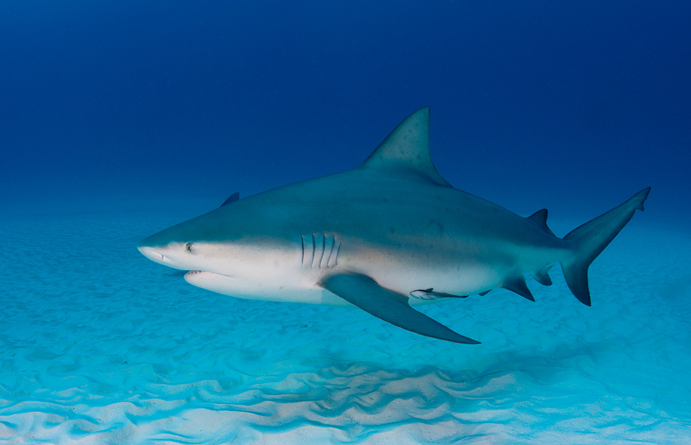

Es un pez cartilaginoso depredador (como todos los tiburones) llamado científicamente Carcharhinus leucas. Vive principalmente cerca de las costas y en aguas poco profundas

Cuerpo grueso y robusto. Color gris en la parte superior y blanco en el vientre. Hocico corto y ancho. Puede medir hasta 3–3.5 metros y pesar más de 90–200 kg. Tiene dientes afilados y mandíbulas fuertes para atrapar presas. Puede nadar a gran velocidad y es un depredador ágil.
Vive en mares cálidos, estuarios y ríos. Se alimenta de peces, calamares, crustáceos e incluso otros tiburones. Es considerado uno de los tiburones más peligrosos para los humanos, porque suele nadar cerca de la costa.